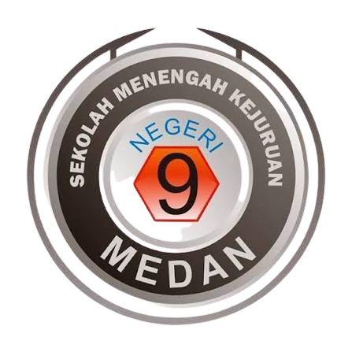
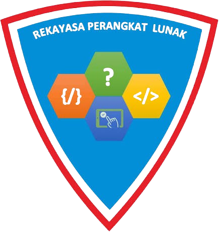

Aplikasi Inventaris QR
Sistem peminjaman alat laboratorium berbasis web responsif dengan pemindai QR Code.


RPL SMKN 9 MEDAN
Sistem peminjaman alat laboratorium berbasis web responsif dengan pemindai QR Code.

Platform ujian berbasis komputer yang adaptif pada desktop lab maupun smartphone.
Etalase digital karya kreatif siswa jurusan Rekayasa Perangkat Lunak.
Aplikasi presensi siswa real-time menggunakan kamera webcam dan kecerdasan buatan.
Katalog peminjaman buku dan modul pembelajaran pemrograman berbasis cloud.

Dashboard pemantauan suhu dan kelembapan ruang server RPL secara otomatis.
Gambaran materi yang dipelajari siswa Rekayasa Perangkat Lunak dari kelas X sampai kelas XII.
Siswa belajar langsung di dunia usaha dan dunia industri untuk menerapkan keahlian pemrograman.
Asesmen keahlian lewat portofolio dan praktik untuk memperoleh sertifikat kompetensi.
Siswa membuat aplikasi nyata, mulai dari perancangan sampai peluncuran, secara individu atau tim.
Kumpulan aplikasi dan sistem yang dibuat siswa RPL. Ganti gambar dan deskripsi sesuai karya yang sebenarnya.
Informasi alamat, kontak resmi, dan jam pelayanan SMKN 9 Medan.
Jl. Patriot No. 20 A, Kel. Lalang, Kec. Medan Sunggal, Kota Medan, Sumatera Utara 20127
Email: info@smkn9medan.sch.id
Telepon: (061) 845 4350
Senin - Sabtu: 07.30 - 15.00 WIB